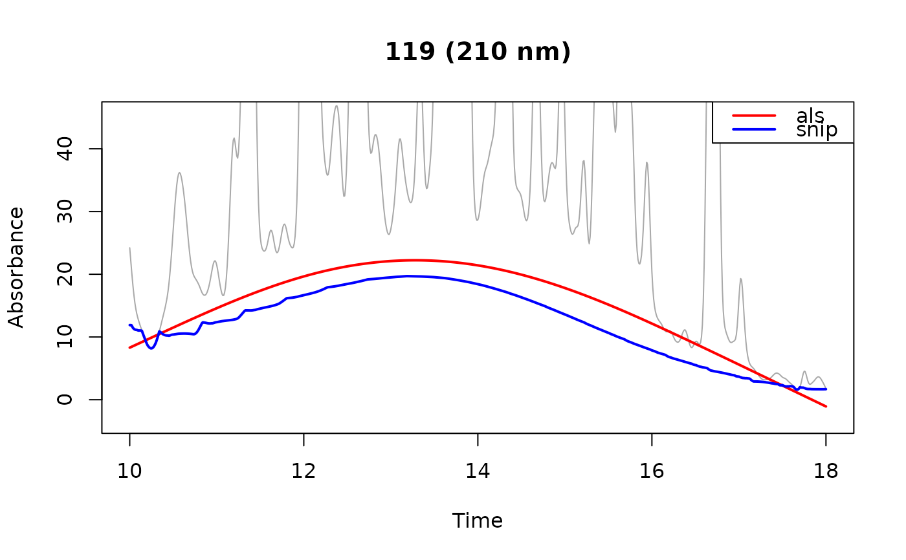

Reference for the baseline estimators available through the baseline
argument of preprocess and correct_baseline.
Details
A baseline is estimated separately for each wavelength, since the drift
differs across the spectrum. Which estimator performs best depends on the
noise, the drift, and how crowded the trace is, and a smoothing parameter
that suits one chromatogram need not suit another. Rather than choosing on
general grounds, fit a baseline and look at it: set attach_baseline = TRUE
in preprocess or correct_baseline and plot the estimate with
plot_baseline, as in the examples below.
| Estimator | Parameters (defaults) | Asymmetry | Overshoots | Scope |
"als" (default) | stiffness (1e7)p (0.001) | fixed | yes | global |
"arpls" | stiffness (1e7) | adaptive | yes | global |
"aspls" | stiffness (1e9)k (0.5) | adaptive | yes | global |
"snip" | m (required) | fixed | no | local |
"als"is asymmetric least squares, as implemented byasysm. A Whittaker smoother is fit to the signal with residuals above the fit weighted bypand residuals below it by1 - p.pis fixed for the whole trace, so the asymmetry is set in advance rather than taken from the data."arpls"is asymmetrically reweighted penalized least squares (Baek et al. 2015). It uses the same Whittaker solve, but replaces the fixedpwith weights computed at each iteration from the mean and standard deviation of the negative residuals, so the asymmetry follows the trace. On very clean traces it can fail to follow steep drift, and the baseline falls below the trace where the drift is steepest."aspls"is adaptive smoothness parameter penalized least squares (Zhang et al. 2020). It keeps the re-weighting and additionally scales the penalty at each timepoint by the normalized absolute residual, so the fit is stiffest where residuals are largest and most flexible where they are smallest. Since that scaling is at most one, it lowers the effective penalty. Accordingly, the defaultstiffnessis set 100 times higher than the other two estimators and a value tuned for"als"or"arpls"will under-smooth. The best conversion varies by trace, so retunestiffnessrather than rescaling it."snip"is Statistics-sensitive Non-linear Iterative Peak-clipping (Ryan et al. 1988). Its baseline follows variation broader than its2m + 1timepoint window and passes beneath narrower features, such as peaks. Two of its properties follow from its construction: the estimate can never exceed the signal, so the corrected trace is non-negative; and each point depends only on the2m + 1window around it, so a distortion in one part of the trace cannot propagate along it the way it can through a global solve.
"als" and "snip" are both one-sided: the first weights positive
residuals down by a fixed factor, the second cannot exceed the signal at
all. Both therefore fit below the center of the noise, which leaves the
corrected trace biased high. The bias is a constant offset in signal units,
so it inflates small peaks proportionally more than large ones. "arpls"
and "aspls" take their asymmetry from the residuals instead and fit closer
to the center of the noise.
Parameters
Parameters are passed to the estimator through the ... of preprocess
or correct_baseline.
stiffness("als","arpls","aspls") is the smoothing penalty. Larger values give a stiffer, smoother baseline. It acts between adjacent timepoints, so the same value spans a different stretch of time on a differently sampled trace; retune it if you change the sampling interval. The defaults are starting points, not calibrated optima.p("als") is the weight given to points above the fit, and1 - pthe weight given to points below it. At the default of0.001, points above the fit, which are mostly peaks, barely pull on it.k("aspls") sets the steepness of the weighting curve. Larger values switch more abruptly between points treated as baseline and points treated as peak.m("snip") is the half-width of the clipping window, in timepoints. It has no default: the window has to be wider than the peaks it clips, which depends on your chromatography.
Acknowledgment
The "aspls" implementation follows pybaselines (Erb 2025) at two points
that Zhang et al. leave open: the default asymmetric coefficient k is
0.5 rather than the 2 printed in the paper, and the second-difference
matrix is left-multiplied by the diagonal matrix of per-timepoint penalty
scalings, an ordering the paper's notation does not settle.
References
Baek, S.-J., Park, A., Ahn, Y.-J., and Choo, J. 2015. Baseline correction using asymmetrically reweighted penalized least squares smoothing. Analyst 140:250-257. doi:10.1039/C4AN01061B .
Zhang, F., Tang, X., Tong, A., Wang, B., Wang, J., Lv, Y., Tang, C., and Wang, J. 2020. Baseline correction for infrared spectra using adaptive smoothness parameter penalized least squares method. Spectroscopy Letters 53:222-233. doi:10.1080/00387010.2020.1730908 .
Ryan, C.G., Clayton, E., Griffin, W.L., Sie, S.H., and Cousens, D.R. 1988. SNIP, a statistics-sensitive background treatment for the quantitative analysis of PIXE spectra in geoscience applications. Nuclear Instruments and Methods in Physics Research B 34:396-402. doi:10.1016/0168-583X(88)90063-8 .
Erb, D. 2025. pybaselines: A Python library of algorithms for the baseline correction of experimental data. doi:10.5281/zenodo.5608581 .
Examples
# \donttest{
data(Sa)
als <- preprocess(Sa[1], dim1 = seq(10, 18, by = .01),
dim2 = seq(200, 318, by = 2), attach_baseline = TRUE,
show_progress = FALSE, cl = 1)
snip <- preprocess(Sa[1], dim1 = seq(10, 18, by = .01),
dim2 = seq(200, 318, by = 2), baseline = "snip", m = 50,
attach_baseline = TRUE, show_progress = FALSE, cl = 1)
plot_baseline(als, lambda = 210, annotate = FALSE)
plot_baseline(snip, lambda = 210, col = "blue", add = TRUE)
legend("topright", legend = c("als", "snip"), col = c("red", "blue"),
lwd = 2)

# }